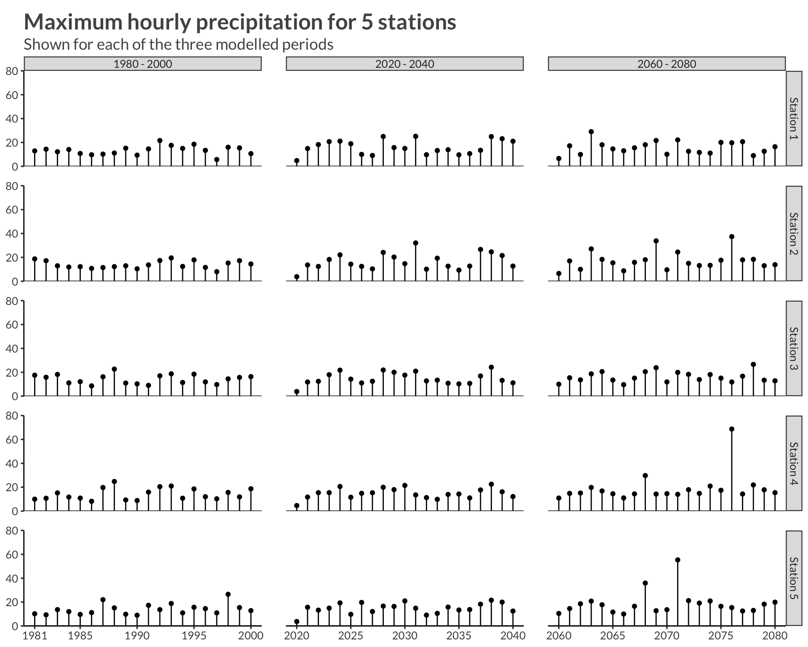

Code
library(bggjphd)
library(tidyverse)
library(GGally)
library(cowplot)
library(glue)
theme_set(theme_bggj())The data used in this research are downloaded from the CEDA Archive:
The raw data contain climate projections for the UK on a 5km grid from 1980 to 2080 for a high emissions scenario, RCP8.5, and contain hourly precipitation rates of \(43.920\) squares on a \(180 \times 244\) grid. The projections are calculated for \(1980 - 2000\), \(2020 - 2040\), and \(2060 - 2080\), thus giving \(60 \times 365 \times 24 \times 180 \times 244 \approx 2.3 \cdot 10^{10}\) data points.
The raw data were processed by calculating the yearly maximum over the hourly precipitation rates for each station, thus reducing the number of data points to \(60 \times 180 \times 244 \approx 2.6 \cdot 10^6\).
p <- full_data |>
ggplot(aes(max_precip, y = after_stat(density))) +
geom_histogram(bins = 100) +
scale_x_continuous(
limits = c(0, NA),
expand = expansion()
) +
scale_y_continuous(
expand = expansion()
) +
labs(
x = NULL,
y = NULL,
title = "Distribution of station-wise maximum precipitation over the period"
)
ggsave(
plot = p,
filename = "Figures/figure1.png",
width = 8, height = 0.621 * 8, scale = 1.3
)p <- full_data |>
ggplot(aes(proj_x, proj_y, fill = max_precip)) +
geom_raster(
interpolate = TRUE
) +
scale_x_continuous(
expand = expansion(),
breaks = c(range(full_data$proj_x), pretty(full_data$proj_x))
) +
scale_y_continuous(
expand = expansion(),
breaks = c(range(full_data$proj_y), pretty(full_data$proj_y))
) +
scale_fill_viridis_c() +
theme(
plot.margin = margin(t = 5, r = 25, b = 5, l = 5)
) +
labs(
x = "X Projection",
y = "Y Projection",
fill = "Maximum Precipitation",
title = "Spatial distribution of maximum precipitation"
)
ggsave(
plot = p,
filename = "Figures/figure2.png",
width = 8, height = 0.621 * 8, scale = 1.3
)p <- full_data |>
ggplot(aes(min_precip, y = after_stat(density))) +
geom_histogram(bins = 100) +
scale_x_continuous(
limits = c(0, NA),
expand = expansion()
) +
scale_y_continuous(
expand = expansion()
) +
labs(
x = NULL,
y = NULL,
title = "Distribution of station-wise minimum precipitation over the period"
)
ggsave(
plot = p,
filename = "Figures/figure3.png",
width = 8, height = 0.621 * 8, scale = 1.3
)p <- full_data |>
ggplot(aes(proj_x, proj_y, fill = min_precip)) +
geom_raster(
interpolate = TRUE
) +
scale_x_continuous(
expand = expansion(),
breaks = c(range(full_data$proj_x), pretty(full_data$proj_x))
) +
scale_y_continuous(
expand = expansion(),
breaks = c(range(full_data$proj_y), pretty(full_data$proj_y))
) +
scale_fill_viridis_c() +
theme(
# legend.position = "top",
plot.margin = margin(t = 5, r = 25, b = 5, l = 5)
) +
labs(
x = "X Projection",
y = "Y Projection",
fill = "Minimum Precipitation",
title = "Spatial distribution of minimum precipitation"
)
ggsave(
plot = p,
filename = "Figures/figure4.png",
width = 8, height = 0.621 * 8, scale = 1.3
)n_station <- 5
precip |>
filter(station <= n_station) |>
mutate(
period = case_when(
year <= 2000 ~ "1980 - 2000",
year <= 2040 ~ "2020 - 2040",
year <= 2080 ~ "2060 - 2080",
),
station = glue("Station {station}")
) |>
ggplot(aes(year, precip)) +
geom_point(aes(group = station)) +
geom_segment(aes(yend = 0, xend = year)) +
geom_hline(yintercept = 0) +
scale_x_continuous(
breaks = c(
1981,
seq(1985, 2080, by = 5)
)
) +
scale_y_continuous(
limits = c(0, 80),
expand = expansion()
) +
facet_grid(rows = vars(station), cols = vars(period), scales = "free_x") +
theme(
panel.spacing = unit(0.03, "npc")
) +
labs(
x = NULL,
y = NULL,
title = glue("Maximum hourly precipitation for {n_station} stations"),
subtitle = "Shown for each of the three modelled periods"
)
An easy way to programmatically generate the dataset used in this research in R is via [FTP(https://help.ceda.ac.uk/article/280-ftp) connections to the CEDA archive]. To do this we need the following:
All the files we want to download live inside the folder designated below
We’re going to need to input our username and password into the URL to download the data. In order to hide my login info when coding I put it in my R Environment (easy to edit with usethis::edit_r_environ()) and can thus write a function to input it in requests. I never assign my info to variables, but rather just use functions to input them.
Now we can send a request to the FTP server in order to get a list of all the files we want to download
We get a single string with all the file names. It’s easy to split them up into separate strings ands remove the trailing empty line.
Now comes the tricky part. We are going to download 720 files (one for each month) that are around 120MB each. If we just download them and keep them on our hard drive that’s going to be upwards of 70GB. Instead of doing that we will use the function process_data() below to do the following:
Before we can iterate we will need to create a new helper function. Since we will now be using download.file() to download our datasets, we need to input our username and password into the URL. As before, in order to not reveal our information we use functions instead of creating global variables in the environment. Thus we won’t accidentally leak our information when f.ex. taking screenshots.
process_data <- function(filename) {
Sys.sleep(0.1)
from_to <- str_extract_all(filename, "_[0-9]{8}-[0-9]{8}")[[1]] |>
str_replace("_", "") |>
str_split_1("-")
from <- as.Date(from_to[1], format = "%Y%m%d")
to <- from + months(1, abbreviate = FALSE) - days(1)
tmp <- tempfile()
download.file(
make_download_path(filename),
tmp,
mode = "wb",
quiet = TRUE
)
temp_d <- nc_open(tmp)
max_pr <- ncvar_get(temp_d, "pr") |>
apply(MARGIN = c(1, 2), FUN = max)
lat <- ncvar_get(temp_d, "latitude")
long <- ncvar_get(temp_d, "longitude")
out <- crossing(
proj_x = 1:180,
proj_y = 1:244,
from_date = from,
to_date = to
) |>
arrange(proj_y, proj_x) |>
mutate(
precip = as.numeric(max_pr),
longitude = as.numeric(long),
latitude = as.numeric(lat),
station = row_number()
)
out
}Having defined our function we throw it into purrr::map_dfr() (map_dfr() tells R that the output should be a dataframe in which the iteration results are concatenated rowwise) for iteration and say yes please to a progress bar.
Having created our dataset we write it out to disk using everyone’s favourite new format parquet. This way we can efficiently query the data without reading it into memory using arrow::open_dataset().
This whole process took 3 hours and 21 minutes on my computer. The largest bottleneck by far was downloading the data.